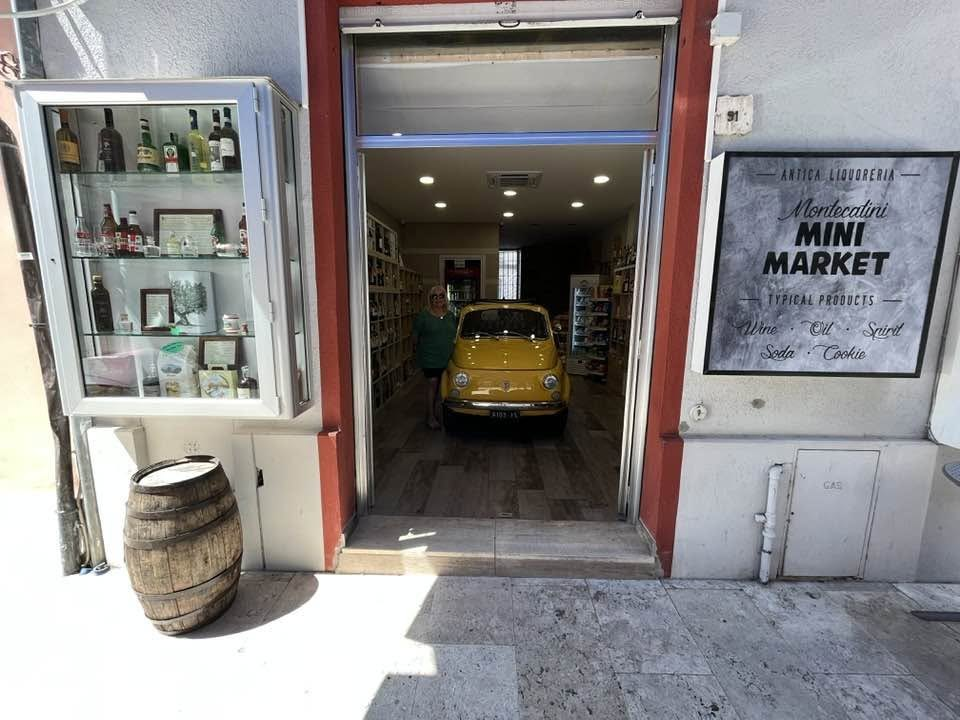
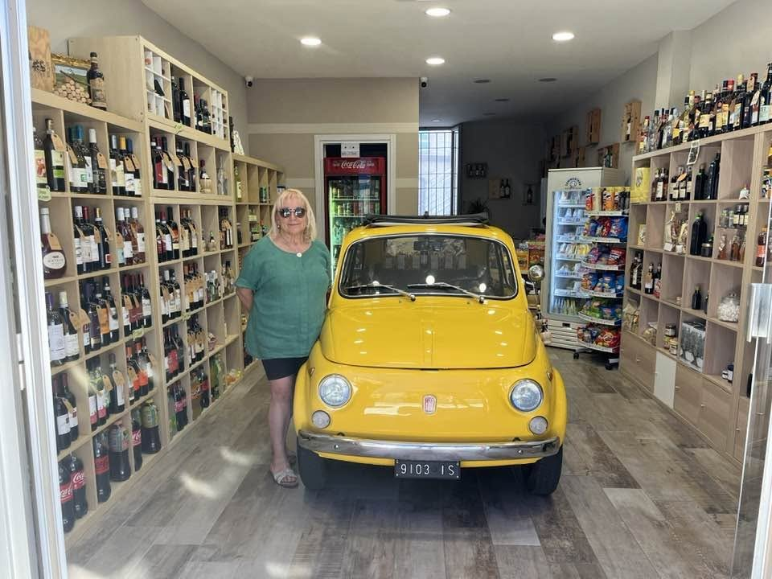
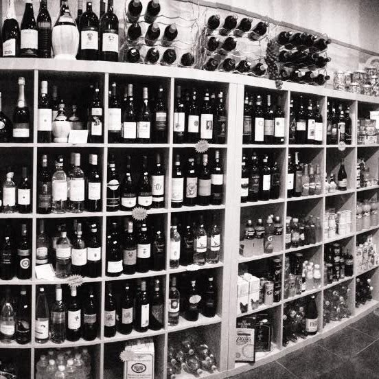
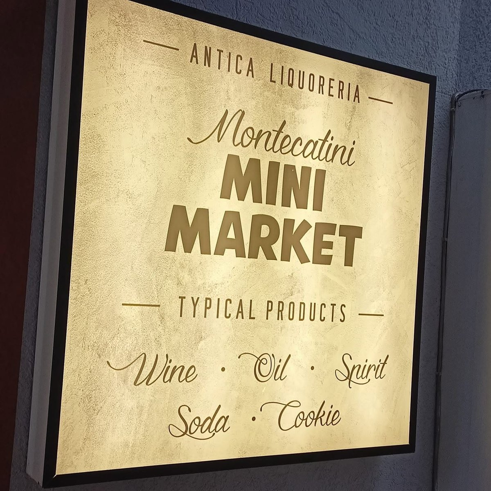
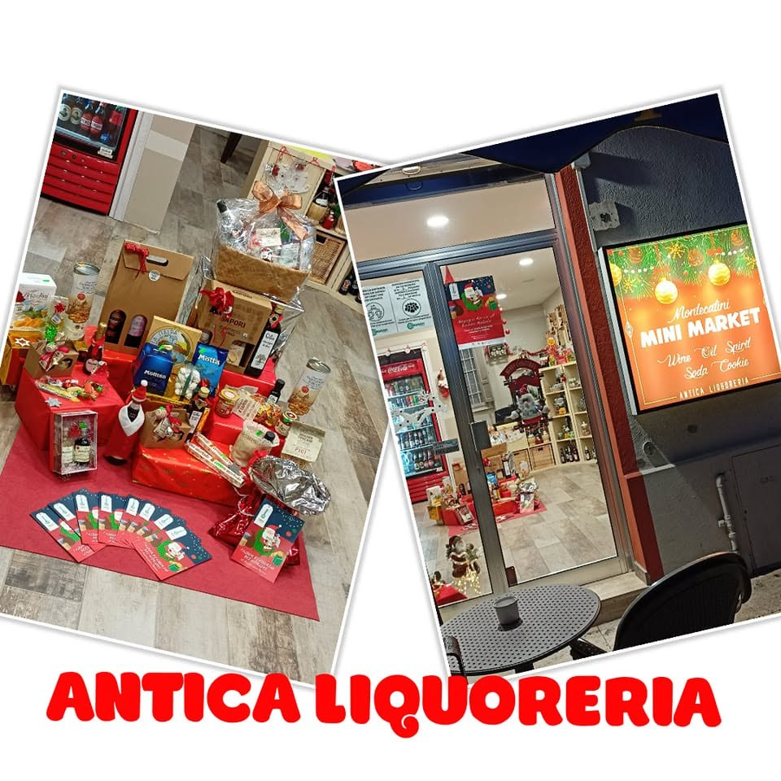
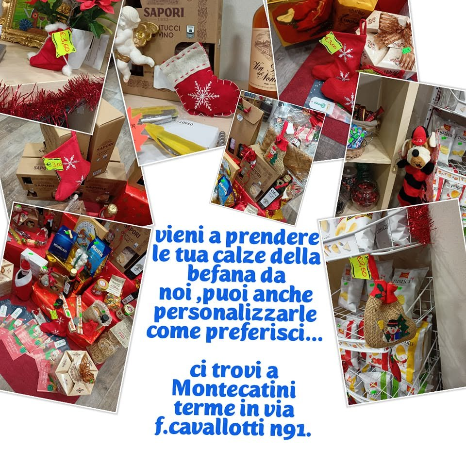
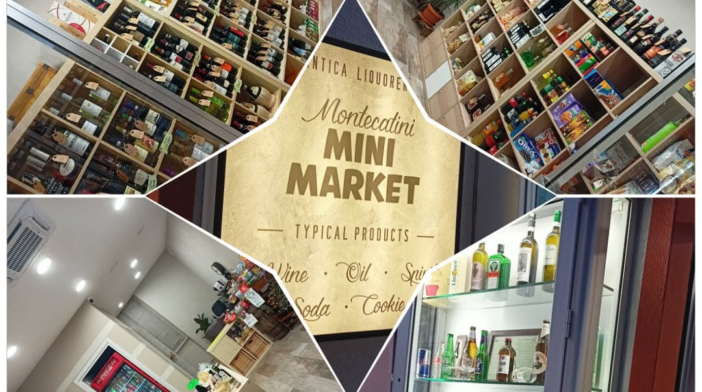

Prodotti tipici · Montecatini Terme
Il sapore della Toscana, da portare a casa
Vini toscani e non solo, olio, liquori, dolci e prelibatezze regionali in Via Cavallotti, nel centro di Montecatini Terme. Dalla birra al Vin Santo.

Sì, dentro c’è una 500 gialla- WineVino
- OilOlio
- SpiritLiquori
- SodaBibite
- CookieBiscotti
La bottega
Un emporio di prodotti tipici
Scaffali pieni di bottiglie, prodotti del territorio e dolci da regalare. Passa a trovarci: ti aiutiamo a scegliere.



Cosa trovi
Dalla birra al Vin Santo
Vini toscani e non
Una vasta scelta di bottiglie, dalla Toscana e da tutta Italia.
Olio
L’olio, da portare a casa o da regalare.
Liquori
Liquori e distillati, come vuole il nostro nome.
Dolci e prelibatezze
Biscotti e specialità regionali per accompagnare il Vin Santo.
Birre e bibite
Fresche, per la giornata a Montecatini.
Primizie di stagione
Quando è il momento, la frutta e la verdura appena raccolte.


Regali
Cesti di Natale e calze della Befana
Prepariamo cesti e confezioni con i prodotti tipici, e a gennaio le calze della Befana, anche personalizzate come preferisci.
Chiedi un regaloPer chi viene da lontano
In vacanza a Montecatini? Porta a casa la Toscana
Tanti nostri clienti vengono da fuori. Vuoi ordinare quando sei già tornato a casa? Scrivici su WhatsApp e ci mettiamo d’accordo.
Ordina su WhatsApp
Dove siamo
In Via Cavallotti, in pieno centro
- WhatsApp328 688 2448
- Telefono0572 79294
- Emailantica.liquoreria0@gmail.com
Via Felice Cavallotti 91, 51016 Montecatini Terme (PT)
Indicazioni